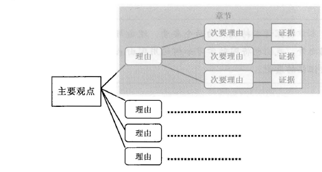
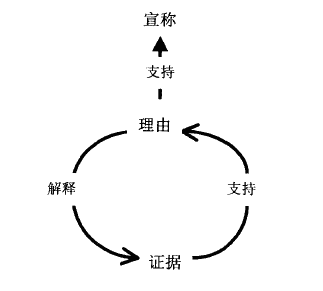

本章将探讨支持观点的两个要素：理由与证据。除辨识两者的异同之外，我们也将同时学习如何运用理由来组织个人的论证，并评价证据的质量。
读者会首先寻找一个论证的核心、它的观点，以及支持观点的两个要素：理由（reason）和证据（evidence）。在一组相关联的理由中，读者看到其支持要素的大致的逻辑结构。如果没看到这个结构，读者会认定你的论证尚未成型，甚至缺乏条理。另一方面，证据是你所提论证的基石，即读者在接受你的理由之前必须看到的已确立的主要事实。如果读者不接受你的证据，他们可能会拒绝你的理由，因而拒绝你的观点。因此一旦你知道自己的观点，接下来的任务就是汇集支持该观点的理由，以及这些理由所凭借的证据。
读者会根据理由来决定是否相信你所提出的观点，同时通过这些理由来理解你的报告。理由可以勾勒出你论证的逻辑，而且假如每个主要理由都是一个小节的论点，那么这些理由也会同时勾勒出你报告的轮廓。在一些复杂的论证中，每个理由都会有次要理由（subreason）来支持，而这些次要理由则成为报告中小章节的论点。
因此在搜集证据的同时，你可以以一种预示报告结构的形式，用理由（及次要理由）来组织证据。你可以把它当做传统的大纲，但在这个阶段，你会发现制作一个称之“分镜”（storyboard）[6]的图表式大纲可能更有用。将你的主要观点与每个理由或次要理由写在个别的卡片（或纸页）上。接着将所有支持某个理由或次要理由的证据写在个别的卡片（或纸页）上。最后，像下面所图示的，在桌上或墙上排列这些卡片，让它们之间的逻辑关系一目了然。

你可尝试不同的排序和分组，直到寻获最能反映你目前理解的安排方式。随着研究工作的进展，你可尝试新的安排方式，但无须担忧细节如何组织，目前你只要处理能够以各种方式加以安排的适量材料即可。
假如这样的图表让你的论证看起来僵化，也无须担心。因为这只是勾勒出你的论证而非概述你的报告。当开始撰写第一份草稿时（见第十二章），你必须从读者的观点来加以规划：如何让你的难题看起来对读者具有重要意义，需要呈现多少背景，以及如何安排次要观点等等。如果你还在从成堆的注释、摘要及影印数据中发现材料，那上面所说的都属于后面阶段的工作，而不是当前的要务。
我们已经了解如何区分理由与证据的不同，但是在某些语境中，两者似乎又是可以互换的（interchangeable）：
有好理由为基础的观点。
有好证据为基础的观点。
但这两者绝非同义词。比较下面这两个句子：
我想要知道你的理由赖以成立的证据。
我想要知道你的证据赖以成立的理由。
第二个句子看起来有点怪异，因为我们并不将理由看做证据的基础，而是将证据看做理由的基础。
麻烦在于，一个陈述是否被视为描述证据或只是提供另一个理由，不是你能决定的，而是读者决定的。你出示了证据，但假如有人要求提供更进一步的支持时，你就得把你先前认为是证据的事物看成是一个理由，即你必须寻求其他更“毋庸置疑”的证据作为支持的理由。以下述的论证为例：
美国的高等教育应该检验它对学生在校外喝酒所采取的“松手”政策（"hand-off" policy），（观点）
因为高风险的狂饮是常见且危险的行为。（理由）
因饮酒而造成伤亡的频率与严重程度持续增加，这种情形不只发生在学生人数众多的“派对型”院校（"party" schools）中[7]，也发生在小型学院的大一新生群体中。（证据）
在最后的句子里，作者提出他认为“确凿”得足以被视为证据的一个事实。但有些读者可能会责问：哦！ 你确定是这样吗？ 你有什么根据？ 如果这样，那表示读者并不同意把上面的陈述当成证据，而是视为仍须有其证据基础的理由。因此作者可以再加上一段话：
在过去五年中，两千人以下的学院里的新生因为狂饮而造成伤亡的比例增加了19%。
当然，具有批判性思考的读者可以再问：好吧， 那你如何知道 “这份数据” 是真的？ 如果这样的话，写作者就得提供更多的数据。假如这项研究是写作者自己做的，他可以提出原始资料及搜集数据时所使用的问卷（这些原始资料和问卷还得面对更多的质疑）。如果这些数据是在某个原始资料发现的，他可以注明出处，但可能会被读者要求提供更好的理由说明为什么这些原始资料是可靠的。
如果可以想象读者的提问：你怎么知道这些？ 我怎么知道可以将这些当成事实来接受？ 那就表示你尚未触及读者所寻求的证据。有时候，当那些所谓的专家用我们永远看不到的研究，很快地告诉我们该做什么时，经验丰富的读者已经学会了如何抱持怀疑的态度来看待大多数的证据。所以当你在提供证据时，必须清楚地交代证据是如何搜集的以及由谁搜集的。如果是他人搜集的资料，那就要找出一个尽可能接近证据的原始资料并注明出处。
我们对证据的基础概念
人们在讨论证据时就像我们一样，通常会使用基础式的隐喻（foundational metaphors）：证据是确凿的事实（hard reality），是坚实的证明（solid proof），是某些我们自己看得到的东西（see for ourselves）。证据是盘石（bedrock），是我们论证所凭借的坚实基础（solid foundation）。上述的语言是用以鼓励读者，让他们将证据想成是有别于自己诠释与判断的事物。然而，资料总是被建构出来的，而且在某种程度上是由资料搜集者决定的——搜集者决定找寻什么数据、决定如何记录他们所看到的，并决定如何将数据呈现出来。因此，在建构论证时，试着将论证建立在无可撼动的证据基础之上，但同时必须谨记，你的证据是否被看成证据完全取决于读者不加怀疑接受的意愿。换个方式来说，切记以鼓励读者同意你所提供的“这就是事实”（just the facts）的方式，来报告你的证据。
现在有个棘手的问题：研究者的报告中很少包括实际证据本身。即使你自己搜集证据，例如计算一片田野上兔子的数量，但在报告上你也只能以文字、数字、表格、曲线图、图片和录像等来代表那些兔子。
举例而言，当一位检察官在法庭上说：“琼斯买卖毒品，这是证明其犯罪行为的证据”；他可以拿出一袋可卡因，甚至将其传给陪审团，让陪审员可以将“证据本身”拿在手上（当然，检察官和陪审员都必须相信药剂师的说法：那些白色粉末真的是可卡因）。但是当该检察官在法律学报上撰写关于该案例的文章时，却不能在文章里附上装着可卡因的袋子，而仅能提及（refer to）或加以描述。
与检察官在法庭中的发言不同，研究者几乎无法在报告中将证据本身与读者分享。研究者提出下面的论点时，可以发现同样的情况：
在理性决策中，情绪扮演的角色比我们所想象的更为重要，（观点）
假如缺乏大脑情绪中枢的协助，我们将无法做理性的决定。（理由）
那些大脑情绪中枢受损者，甚至无法决定日常生活中的简单决策。（证据）
这个论证无法提供因脑伤而无法做决定的真人作为证据，而只能陈述对他们行为的观察，提供他们的脑部扫描图片或反应时间表等等。事实上，我们比较希望研究者公正地报告他们的证据，而不是让我们自己去做脑部检验、判断扫描结果，以及观察病人。
我们知道证据与证据报告之间的区别看起来可能有些微不足道，但它强调了两个重要的问题。首先，每当你报告自己的证据时，同时也改变了证据，通常会让原来的证据比你自己实际所见所想的更为清晰、更有条理。即使你提供的证据看起来是客观的量化的数据，你也免不了去用有利于自己的口吻去描述它们：你必须决定计算什么、如何对数字进行归类、如何安排次序。即便是照片和记录，你也能以某种特定方式来呈现证据，赋予它一个你自己的见解或形式。
其次，你必须依赖其他人的报告，而他们已经将他们的证据定型。即使面临下周就要截稿的情况，也很少研究者只依靠自己所收集的资料来提出证据。譬如说，假如你要以“运动员与艺人比政府高级官员的收人高出多少”的证据，来支持“崇拜名流扭曲了理性经济决策”的观点。你可以取得关于政府薪资的官方报告，但那些运动员和艺人不太可能把支票存根或报税单拿给你看（这些数据本身就得花很多工夫）。所以你必须指望有关那些薪资报告的报告。除非你能问到那些帮他们报税的人，否则你离证据本身还有很大一段距离。所以当你搜集并报告证据时，这些证据至少都已经是三级资料了，你必须记得：其中的所有报告者都对证据进行了挑选、安排和提炼的工作。
阅读过大量研究报告的人对“证明”（proof）如此挑剔的原因，乃出于“报告的报告”往往出现可疑的特性。如果你自己搜集证据，他们就会想知道你使用的方法是什么。如果你使用某个原始资料，他们就会期待你找到初级资料；即便不是初级资料，也会期待你获得的数据能够尽可能地接近证据本身。他们想看到完整的引述和一份他们可以自行查询的参考书目。简而言之，读者想要知道他们自己与证据本身之间完整的系列报告。在一个我们都受研究报告和意见调查——它们顶多是可疑的，而最糟的是假造的——所支配的年代，你必须给读者一个好理由，让他们放下合理的怀疑，因为这个责任链（chain of accountability）的最后一个环节正是你自己。
为什么信任证据报告？
在实验科学的早期，研究者在许多见证人（witnesses）面前进行实验，有声望的科学家可以直接观察实验并证实记述证据的准确性。现代的研究者无法再依赖见证人，取而代之的是每个研究领域中标准化地搜集和报告证据的方法学。当今，正是这些方法学能够保证所搜集的资料是可靠的。假如遵循所属领域中的标准程序来搜集与报告证据，那就可以鼓励读者接受你所呈现的证据，而无须目睹或直接从见证人那里听到这些证据。
你可以用许多方式来报告证据：
不同的研究团体期待不同的证据形式。比如说，社会学家与经济学家比较偏好以表格、曲线图和图表形式呈现的数据；文学评论者指望来自文本的引述；人类学家与历史学家不仅依靠对特定影像和事件的语言描述，也依靠照片、录像带及声音记录。如果适当呈现数据的话，每个团体也会接受其他的数据类型，但他们也可能不喜欢特定的数据类型。文学评论者不会期待以长条图来呈现一个作者的成长，而大多数心理学家对关于心理活动的逸事描写则会抱持怀疑的态度。
一旦知道读者期待的证据类型，你必须以你用来判断原始资料的同样标准，检验自己搜集到的证据：这些证据是否充分且具有代表性？是否被精确地报告且出自权威性的原始资料？这里没有特殊的标准。我们都可以将其应用在最平常的对谈里，甚至是与小朋友的对谈中。在下面的会话中，A指出了B的错误：
B. 我需要一双新的运动鞋（观点），你看，这双似乎已经太小了（证据）。
如果可以把自己想象成是B或A，你便能够检验任何论证里证据的质量，包括自己的论证在内。
读者以A的标准来判断证据的报告。他们希望你的证据正确、充分、具有代表性，而且精确。如果你无法搜集到这样的证据，他们就会希望这些证据是来自一个权威性的原始资料（读者可能也会拒绝一些他们认为不相关或不恰当的证据。但是要使用这些标准，你必须知道什么是论据，我们在第十一章会详加讨论这个问题）。因此当你汇集证据来支持你的理由、让这些证据进人你的规划之前，你就要先加以筛选考虑。
比较多疑的读者会在你的数据里抓住小瑕疵、引述或引语中微不足道的错误，并认为在其他每件事上，你都是绝对不可信赖的。如果你的论文指望从实验室或实地中搜集资料，那么就完整而清楚地记录它们，并在你撰写报告之前、撰写报告的过程中及完成之后，再三地核对。把简单的事情做好以表示你对读者的尊重也是对你处理困难事情的最好训练。如果你承认证据不太可靠，有时反而可以使用有问题的资料。事实上，当你指着似乎能支持你观点的证据并将其斥为不可靠的资料时，反而说明自己是谨慎小心和自我批判的——因此你是值得信任的。
初学者往往呈现不充分的证据。他们在一段引述、一份资料、一段个人经验中找到支持，就以为能证明自己的观点（虽然有时候一点点证据就足以反驳一个观点）。
莎士比亚必定痛恨女人，因为《麦克白》中的女性如果不是邪恶就是软弱。
要读者接受一个观点，一点点证据是远远不够的。如果你的观点还有些争议性，你就要找出最好的证据；总是有人能找到更多的证据，而且有些证据对你的观点很可能是致命的。即使你提供相当多的证据，但读者还是会期望这些证据在可取得的不同证据中具有代表性。光是一部戏剧不足以代表莎士比亚的所有作品，更不用说所有伊丽莎白女王一世时代的戏剧了。
读者期待你精确地陈述证据。某些字眼会让他们对你的观点心怀警觉而无法确定其要旨：
林业局投入大笔经费来防治森林火灾，但发生大型、损失惨重的森林火灾的可能性仍然很高（a high probability of large, costly ones）。
大笔经费是多少钱？很高的可能性是多高？30%？50%？还是80%？—场大型森林火灾中受损的林地面积有多大？小心使用诸如一些（some）、大部分（most）、很多（many）、几乎（almost）、经常（often）、通常（usually）、频繁地（frequently）、一般而言（generally）等字眼。这些字眼能为一个观点设定适当的界限，但也能将它搞砸。
然而，每个领域对精确度的理解不同。物理学者以小于一秒的极短的时间单位来测量夸克的寿命，所以他们可容忍的误差程度极其微小；历史学家以星期或月来估计苏联政府即将垮台的时间；古生物学家判断一个新物种的生存年代，他们使用的时间单位动辄数十万年。根据不同领域的标准，这三种描述方式都是恰如其分地精确（appropriately precise）。证据也可能过于精确。一个历史学家如果声言苏联政府会在1987年8月18日下午两点走到尽头，他就会让自己看起来很愚蠢。
不同领域界定不同标准来评价证据，但每个领域都要求证据合乎它的判断标准。假如你是初学者，你就需要经验来学习所属领域中哪些证据类型是读者接受或拒绝的。而获取经验的方式就是成为读者批评的对象，这是令人痛苦的。而不那么痛苦的方式，是寻找因证据被判定为不可靠而失败的作品作为论证实例。在老师讲课或课堂讨论的过程中，注意聆听老师述说那些他认为证据薄弱而加以批评的论证。以反例为师，你就会更了解什么是不可靠。
证据可能是正确的、充分的、有代表性的及具有权威性的，但如果读者无法很快地理解这些证据，等于没有提出任何证据。如果你加上一个既支持观点又解释证据的理由，读者就将能理解证据与观点之间的关联，因而可以更容易地看懂证据。其间的关系，如图所示：

举例来说：下表中的什么东西，与句子所引导的观点有关？
美国的汽油消耗量与某些悲观的预测相抵触：
| 1970 | 1980 | 1990 | 1996 | |
|---|---|---|---|---|
| 里程数(千英里) | 10.3 | 9.1 | 10.5 | 11.3 |
| 消耗量(加仑) | 830 | 712 | 677 | 698 |
我们需要某些协助来诠释这些数据，了解看到数据时所呈现的意义，并知道哪个数据与观点最为相关。下述中粗体字的一句话将有助于我们理解数据与观点之间的关系：
美国的汽油消耗量与某些悲观的预测相抵触。（观点）与1970年相比，我们在2000年的驾驶里程數增加了23%，但是耗掸的油料却减少了30%：（理由）
| 1970 | 1980 | 1990 | 1996 | |
|---|---|---|---|---|
| 里程数(千英里) | 10.3 | 9.1 | 10.5 | 11.3 |
| 消耗量(加仑) | 830 | 712 | 677 | 698 |
加上的句子告诉我们该留意这个表格的什么地方，以及如何解读。事实上，这个句子拥有双重任务：它不但解说数据，也提供支持该观点的理由。
读者在阅读较长的引述时，也会需要相同的协助。下面是一个有关哈姆雷特的观点，它的证据基础是一段引述：
当哈姆雷特遇见正在祈祷的继父克劳狄斯时，他展现出了冷酷的心思（观点）。
现在他正在祈祷，我正好动手（杀他）：
我决定现在就把他杀了，让他上天堂去，
如此一来我也算报了仇……（不，我还要考虑一下）。
一个恶人杀死了我的父亲；
我，他的独生子，却把这个恶人送上天堂（？）
啊，这简直是以恩报怨了。（证据）
这个论证并未交代清楚。引语中并没有什么地方指出哈姆雷特的冷酷心思。比较一下下面的版本：
当哈姆雷特遇见正在祈祷的继父克劳狄斯时，他展现出了冷酷的心思。（观点）他冲动地想要杀死克劳狄斯，但却停下来反省。假如在克劳狄斯祈祷时杀了他，反而让克劳狄斯死后上天堂，这与他想让克劳狄斯下地狱去的想法冲突，因此哈姆雷特决定不在此时动手杀他。（理由）。
他现在正在祈祷，我正好动手（杀他）：
我决定现在就把他杀了，让他……（证据的报告）
你不能指望详细的资料或引文会不言自明。如果缺乏一个对他们说明证据的理由，读者就可能得花点心思才能懂得证据的意义。因此，加个解说的理由来介绍复杂的证据。